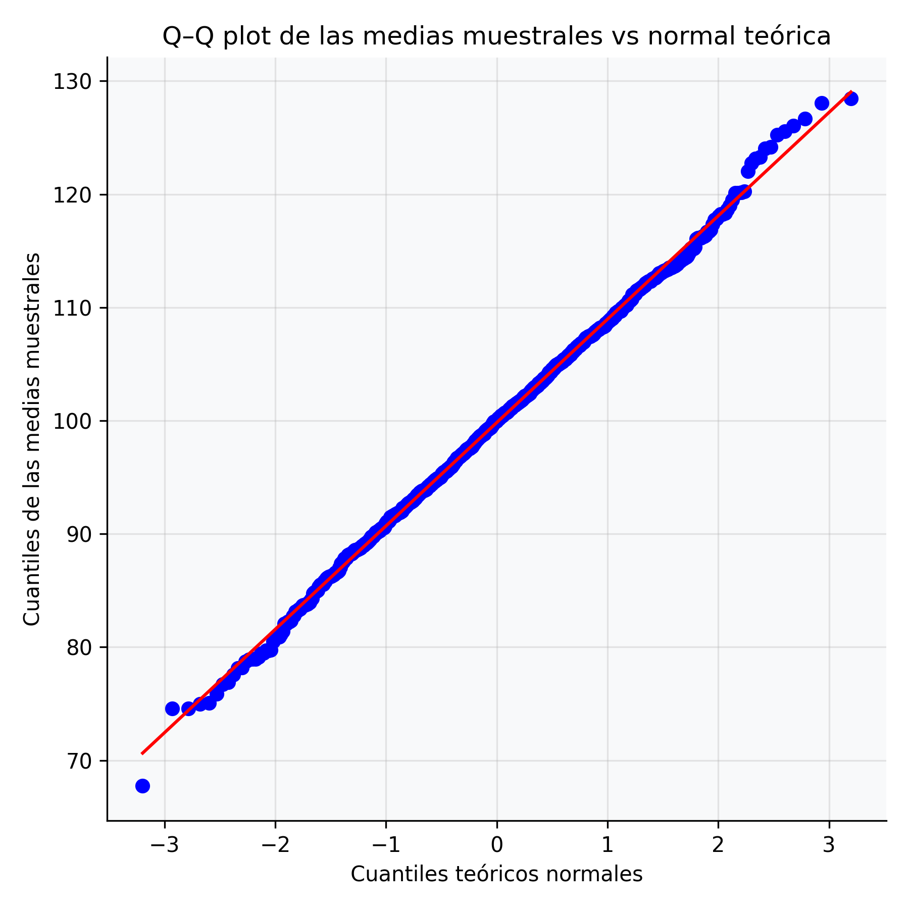
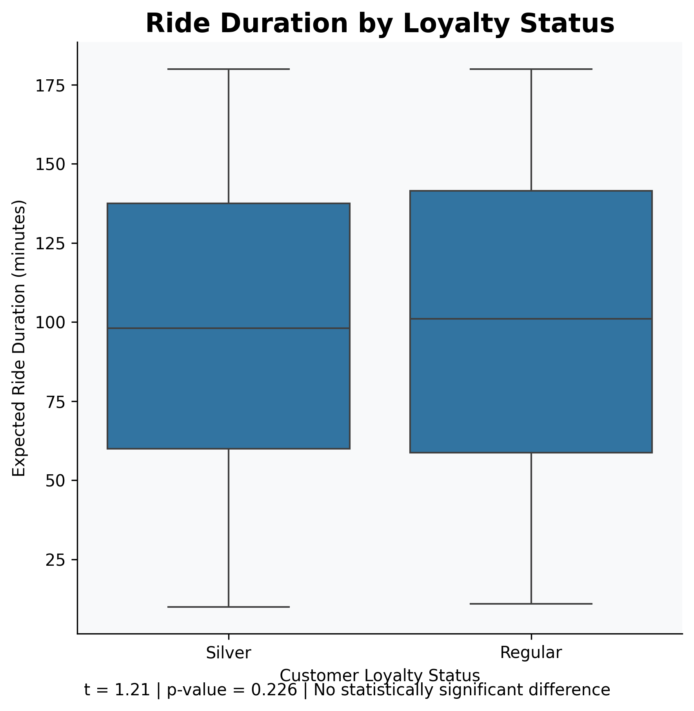
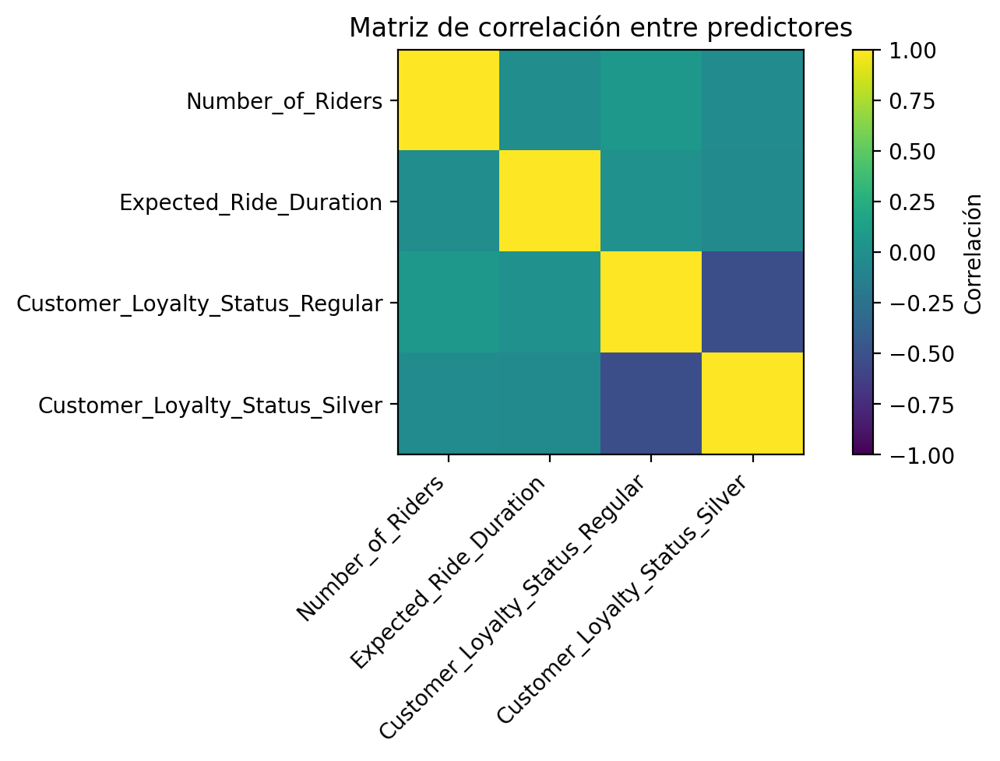
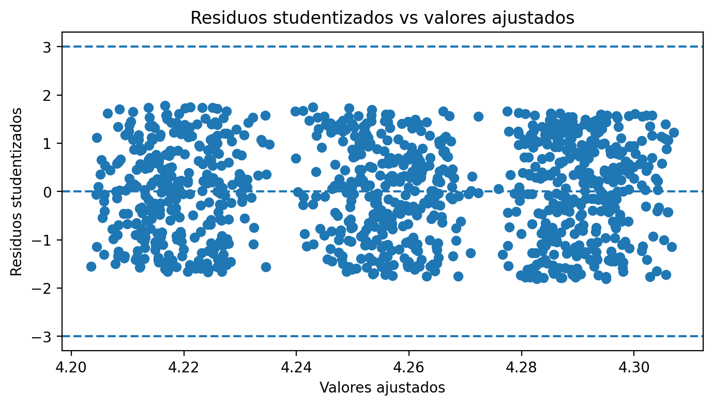
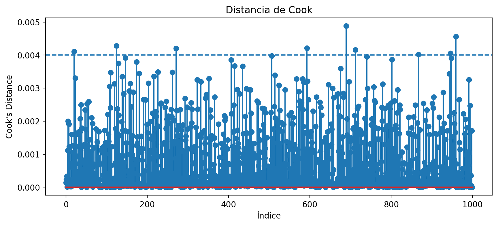
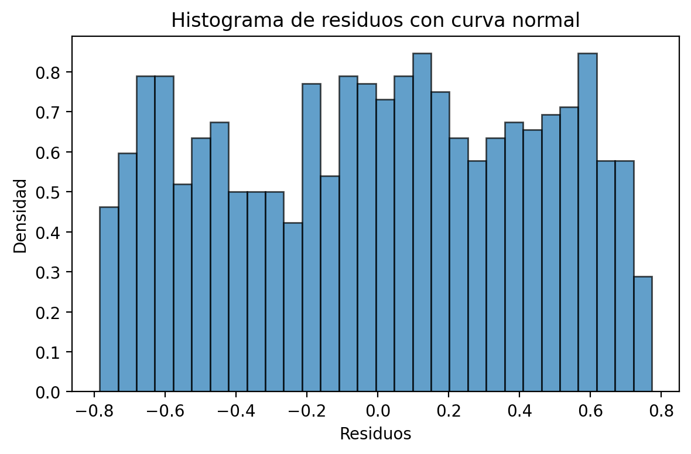
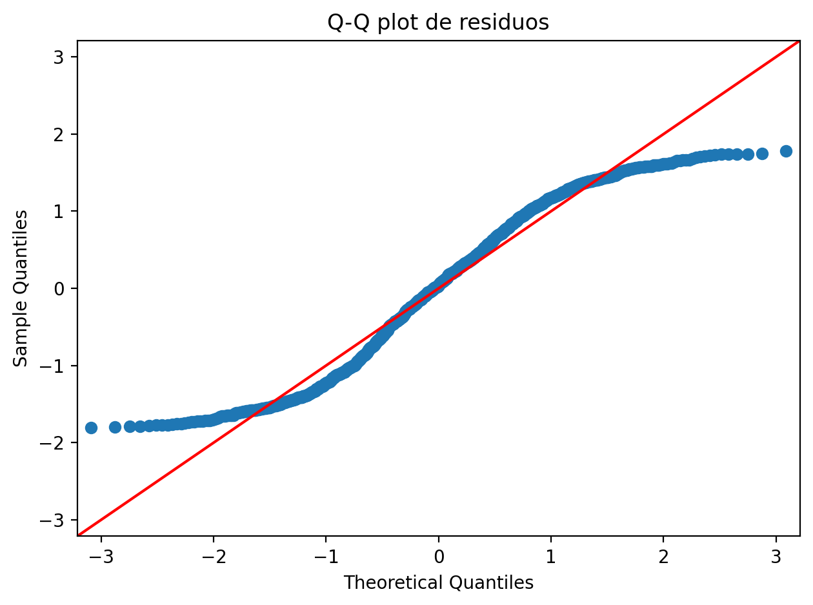

Habilidades demostradas en los proyectos
Regresión Múltiple
OLS, diagnósticos, supuestos
Inferencia Estadística
IC, pruebas t, F, chi²
Bootstrap & Robustez
Remuestreo, RLM Huber
Visualización
Matplotlib, Seaborn
Teorema Central del Límite
Simulación, Q-Q, Shapiro-Wilk
Diagnóstico de modelos
VIF, Cook, Breusch-Pagan
Proyectos
Análisis Exploratorio e Inferencial · Dynamic Pricing
Mayo 2026
Visualizaciones principales



Comportamiento de las variables del servicio de transporte mediante técnicas inferenciales (TCL, IC, pruebas de hipótesis)
- Se simularon 1000 muestras de tamaño n=30 de Expected_Ride_Duration para construir la distribución de medias muestrales.
- Se graficó un histograma y se verificó la normalidad con Q-Q plot y prueba Shapiro-Wilk (p=0.678 > 0.05).
- Se construyeron tres IC al 95% para la media, proporción de ratings ≥4 y varianza de Expected_Ride_Duration.
Intervalos de Confianza al 95%
| Parámetro | Estimación puntual | Límite inferior | Límite superior |
|---|---|---|---|
| Media · Expected_Ride_Duration | 99.59 min | 96.54 | 102.64 |
| Proporción · Average_Ratings ≥ 4 | 0.686 | 0.657 | 0.715 |
| Varianza · Expected_Ride_Duration | 2417.24 min² | 2218.51 | 2644.06 |
Pruebas de Hipótesis · Comparación de Grupos
Análisis de Poder Estadístico · Prueba t Gold vs Silver
| Parámetro | Valor | Interpretación |
|---|---|---|
| Tamaño muestral Gold / Media | 313 · 101.60 min | Viajes ligeramente más largos en clientes Gold |
| Tamaño muestral Silver / Media | 367 · 97.02 min | Diferencia observada de ~4.58 min entre grupos |
| Cohen d (tamaño del efecto) | 0.0934 | Efecto muy pequeño (umbral mínimo relevante: d ≥ 0.2). Los grupos son estadísticamente casi idénticos. |
| Tamaño efectivo (n_eff) | 168.93 | Equivale a tener dos grupos balanceados de ~169 personas. El desequilibrio entre 313 y 367 reduce la eficiencia estadística. |
| Nivel de significancia (α) | 0.05 | Probabilidad máxima aceptada de cometer un error tipo I (falso positivo) |
| Poder estadístico aproximado | 22.87% | La prueba solo tiene un 23% de probabilidad de detectar la diferencia si existiera. El 77% restante sería un falso negativo (error tipo II). Se recomienda poder ≥ 80%. |
¿Por qué no se detectó diferencia significativa?
El análisis no rechazó H₀ de forma consistente con los datos: el efecto es tan pequeño (d ≈ 0.09) que se necesitarían muestras mucho mayores para detectarlo con confianza. El bajo poder (23%) indica que la prueba no tenía suficiente sensibilidad para este tamaño de efecto — no necesariamente porque no haya diferencia, sino porque la diferencia, si existe, es prácticamente irrelevante en términos operativos.
Regresión Lineal Múltiple y Diagnóstico de Supuestos · Dynamic Pricing
Métodos Estadísticos · Junio 2026
Objetivos del proyecto
- Evaluarsi las variables operacionales del servicio de transporte
Number_of_Rides,Expected_Ride_Duration,Customer_loyalty_StatusTienen capacidad para explicar la variación en las calificaciones promedioAverage_Ratings. - Diagnosticar los supuestos de la regresión lineal múltiple (normalidad, homocedasticidad, independencia) y proponer estrategias de mejora del modelo.
- Comparar los resultados de OLS con métodos robustos (RLM Huber) y remuestreo (Bootstrap) para confirmar la estabilidad de los hallazgos.
Modelo Ajustado
OLS (Mínimos Cuadrados Ordinarios)
Intercepto estimado 4.2229
R² modelo OLS0.49% Breusch-Pagan p = 0.0427
Durbin-Watson (sin autocorrelación)
Dw=1.999
Diagnóstico de Supuestos
Normalidad de los residuos: Shapiro-Wilk
Homocedasticidad: Breusch-Pagan
Autocorrelación: Durbin-Watson
Colinealidad: Matriz de correlación
Intento de mejora del modelo (log Y)
Transformación Logarítmica: R² = 0.004
Breusch-Pagan p = 0.066Shapiro-Wilk p ≈ 0
Intento de mejora (λ = 1.225)
Transformación Box-Cox:
R² = 0.0049
Breusch-Pagan p = 0.039Shapiro-Wilk p ≈ 0
λ ≈ 1.22 indica que la escala original ya es casi la óptima.
Visualizaciones principales - Diagnostico de supuestos





Pipeline de mejora del modelo · Diagnóstico y robustez
| Variable | IC 2.5% | IC 97.5% | Excluye 0 |
|---|---|---|---|
| Number_of_Riders | −0.0011 | 0.0013 | No |
| Expected_Ride_Duration | −0.0007 | 0.0004 | No |
| Loyalty Regular | −0.0317 | 0.1040 | No |
| Loyalty Silver | 0.0040 | 0.1367 | Sí ✓ |
Conclusiones del análisis
Hallazgos clave
- El modelo de regresión no explica Average_Ratings con las variables disponibles: R² ≈ 0 y prueba F no significativa (p = 0.299).
- El único efecto robusto —confirmado por OLS, RLM y Bootstrap— es que los clientes Silver califican ~0.07 puntos más alto que los Gold, aunque el tamaño del efecto es muy pequeño.
- La calificación promedio está determinada por factores no capturados en el dataset: experiencia del conductor, puntualidad, trato, estado del vehículo, etc. mejorar el modelo sería necesario incorporar variables directamente relacionadas con la experiencia del usuario durante el viaje.
Consejo para reclutadores: 3 opciones de acceso rápido
- GitHub: Repositorio público con los
.ipynbrenderizados, un README con capturas y enlace al portafolio. - Google Colab: Comparte los notebooks con "Cualquier persona con el enlace puede ver" → el reclutador no necesita instalar nada.
- Este HTML: Un solo archivo auto-contenido con imágenes embebidas (base64) que funciona sin servidor ni conexión.